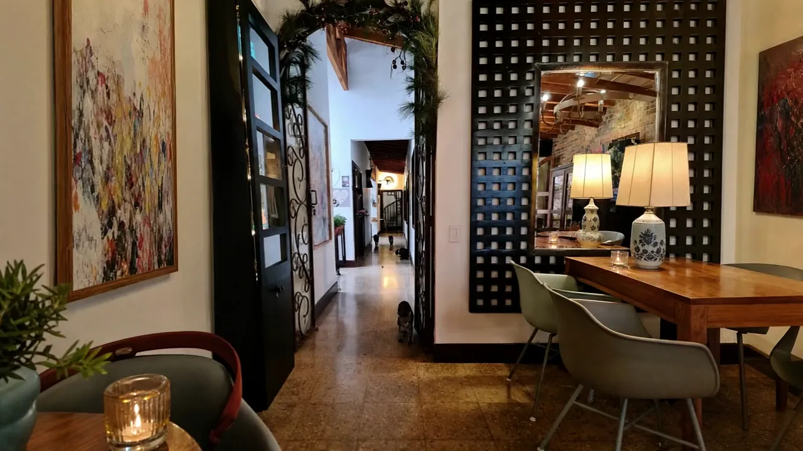
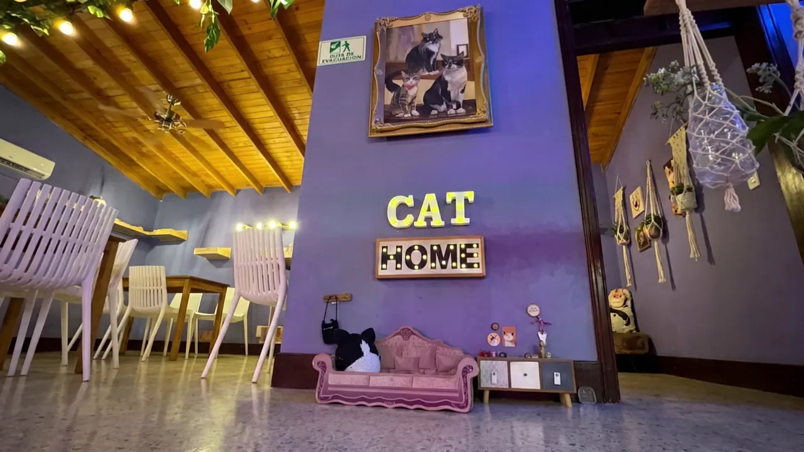
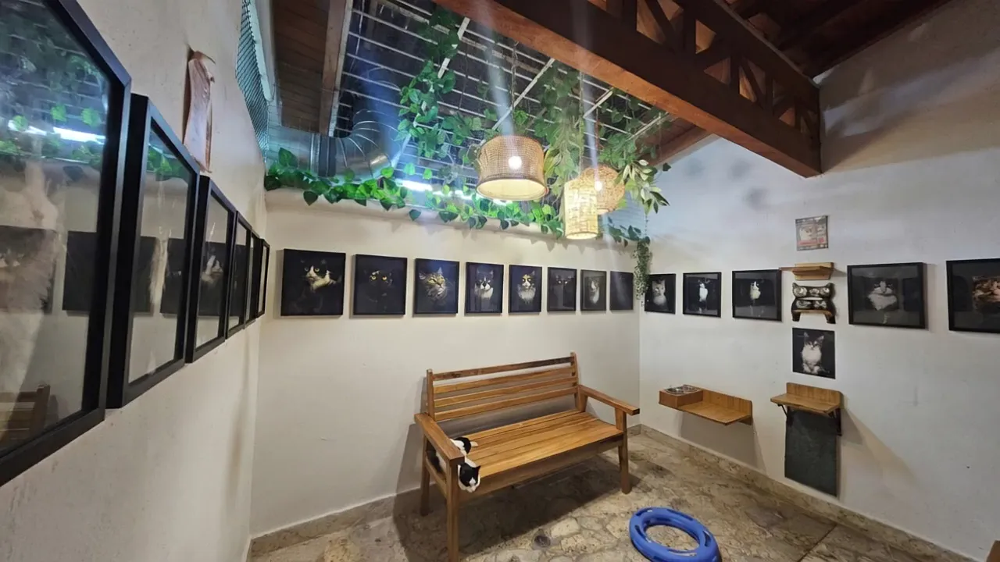
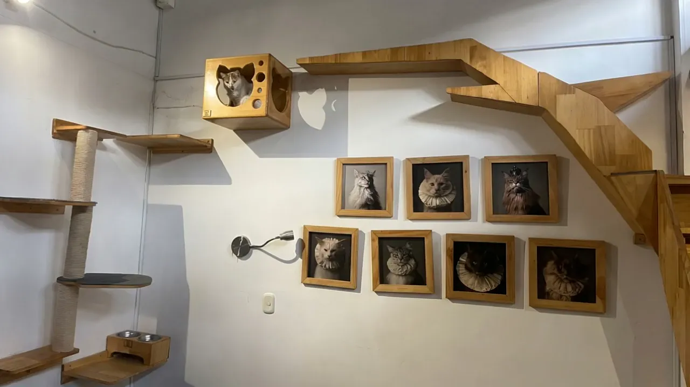
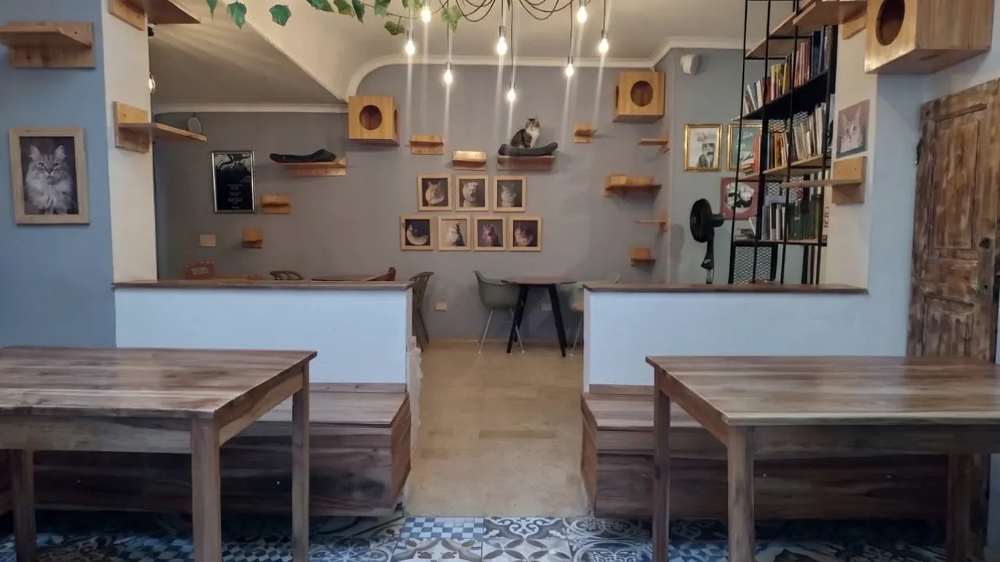
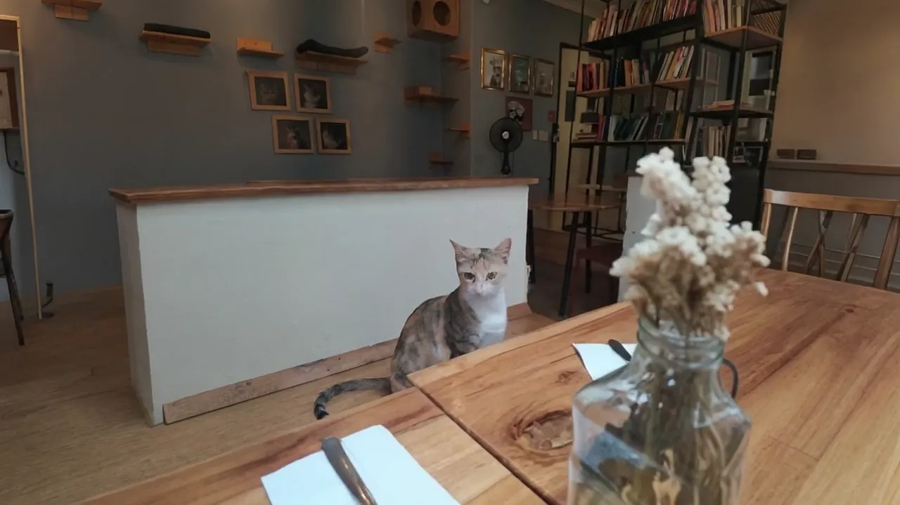
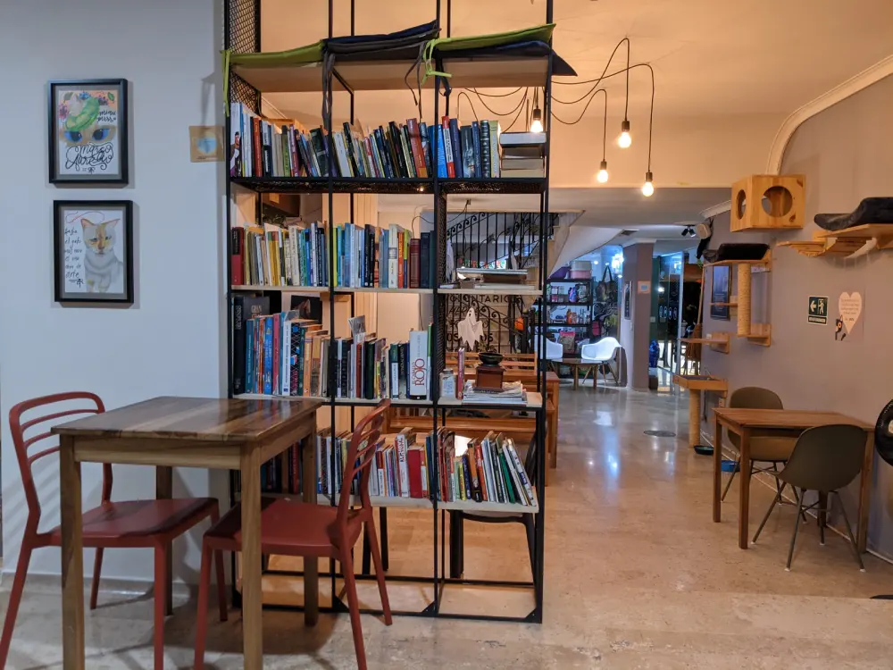
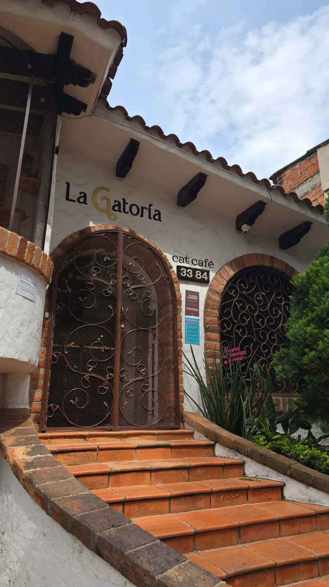
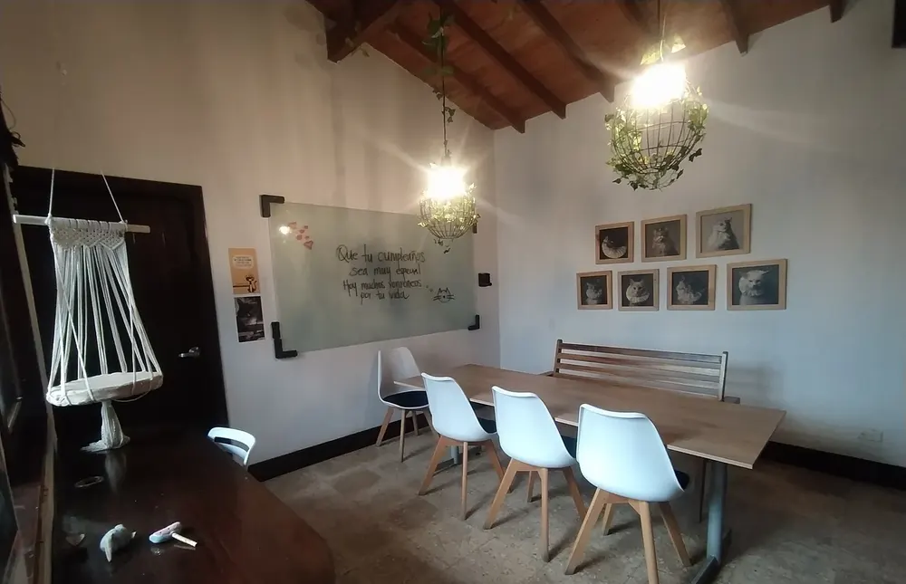
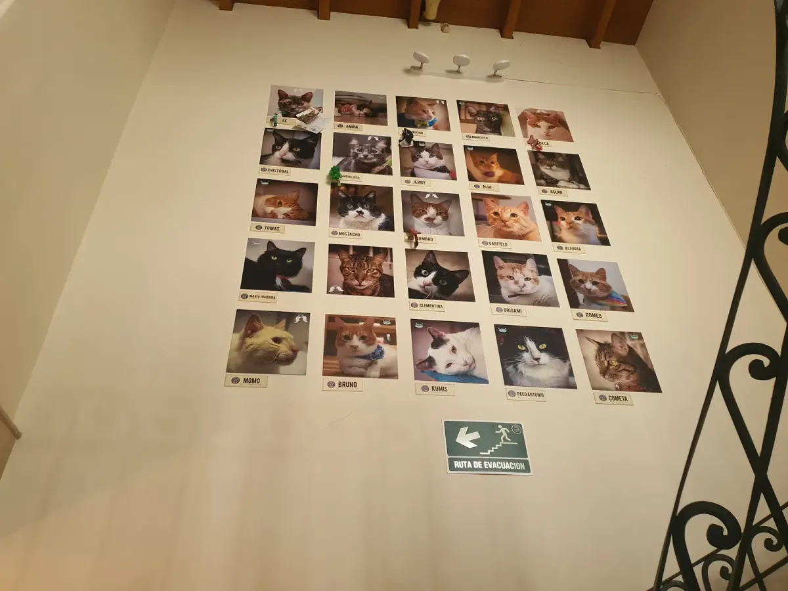

-
Cra. 80C #33-84 · Laureles, Medellín
Comida vegetariana en la casa de los gatos
La Casa de los Gatos Felices: una casa de ladrillo donde viven entre 15 y 18 gatos rescatados. Atendemos solo con reserva y desde los 10 años.
-

Al entrar
Aquí los anfitriones tienen cuatro patas
Te reciben, te cuentan las reglas de la casa y te dan un recorrido. Los gatos andan sueltos por los pasillos, cada uno a su ritmo.
-

Su casa, tu visita
Tú eres la visita
Los gatos deciden cuándo acercarse. No se cargan: se admiran de cerca, se acompañan y, si ellos quieren, se dejan consentir.
-

La galería
Una banca, retratos y alguien durmiendo la siesta
Lámparas de mimbre, enredaderas y paredes llenas de gatos enmarcados. Un rincón para quedarse quieto un rato.
-

Hecha para ellos
Puentes, cajas y repisas a su altura
La casa está pensada para su bienestar: suben, se esconden y te miran desde arriba. En el cookie time eres tú quien les da las galletitas.
-

El comedor
Comida vegetariana, sin carta cerrada
Waffles de yuca, flan, limonada de coco, ensalada de las hadas. Entre COP 40.000 y 60.000 por persona, según Google.
-

Tu mesa te espera
Reserva por mensaje directo
Escríbenos por Instagram con el día, la hora y cuántas personas vienen. Lun a jue de 2 a 8 p. m., vie de 1 a 8, sáb de 1 a 9 y dom de 1 a 7.
Lo que cuentan en Google
Lo que más repiten: la limpieza, lo bien cuidados que están los gatos y la calma de la casa.
★★★★★
Fui a La Gatoria y quedé MATADA. Amé, amé y amé. Las sodas deliciosas, las dos entradas que pedimos 10/10 y los postres ni se diga: los dos waffles -estos son de yuca- que manejan y el flan estaban deliciosos.
Seguir leyendo
El ambiente súper tranquilo, como pa’ desconectarse del mundo, relajarse y parcharse un rato. Y los gatos... ay no, morí de amor. Me tocó contenerme pa’ no cogerlos a todos y llenarlos de besos porque obvio hay que respetar y dejar que ellos se acerquen cuando quieran, toca admirarlos de lejos. Les puedes dar Churu, que lo compras en la tienda ahí mismo, y hasta tienen una hora de galletitas donde tú misma se las das. Vuelvo porque vuelvo. 5 estrellas 😌
★★★★★
En las más de 10 ocasiones que he ido a este lugar, siempre me he sentido muy feliz, el personal es amable, atento. En todas las ocasiones me han hecho tour, y el establecimiento resalta por su…
Seguir leyendo
…limpieza, organización y sobre todo bien cuidado de todos sus gatitos. La comida es rica, las bebidas igual, y los postres maravillosos! Un lugar donde no duele gastar, porque uno queda muy contento siempre. A parte, me encanta ir a la tienda de mascotas que tienen, siempre que voy compro algo, porque es buena la atención, los precios están perfectos, la variedad de cosas y su calidad. De los mejores lugares para ir, si eres una persona TRANQUILA, que aprecias el contacto con gatos. Siempre y cuando respetes que estás EN LA CASA DE ELLOS. Tú eres la visita, por lo tanto, hay que acatar las reglas…
★★★★★
Definitivamente la Gatoría es el lugar más hermoso que hay, te reciben con cariño, te informan las reglas (que son ideales para compartir el espacio y la sana convivencia), los gaticos son hermosos, y…
Seguir leyendo
…todo está pensado para que su bienestar sea lo más importante, la comida es una delicia, mi favorito la ensalada de las hadas y angelito punkero, las papas punkeritas, la limonada de coco, gata engreída, el waffle enriquito fortachon 🤤 ay noo todo!! , el recorrido por la casa, el cookie time, el tren ronroneador, definitivamente todo es una maravilla, uno va y se siente taaaan bien, super mega recomendado. Eso si hay que tener en cuenta las reglas de la casa y que para ir siempre hacer la reserva, por la seguridad y comodidad de los michis y la comodidad humana también
★★★★★
El mejor lugar que he podido encontrar, he celebrado cumpleaños, he ido con mi pareja, con mi mamá y con amigas.. Cualquier plan encaja perfecto con la energía de este lugar la comida es…
Seguir leyendo
…vegetariana y sumado a eso es super deliciosa y obviamente el pluss de tener la compañía tan perfecta de los michis hace que todo sea perfecto allí. ¡No se pierdan la oportunidad de conocer este lugar! También hace poco inauguraron un Teatro allí mismo, “Teatro Orión” y pueden ir a ver pelis cada 8 días y pueden reservarlo para eventos especiales 😍😍😍😍
★★★★★
Un lugar específicamente para los cat lovers (amantes de los gatos), se convive con ellos, se come rico, te dan un tour por las instalaciones pensadas específicamente para los gatitos (hay entre 15 y…
Seguir leyendo
…18 gatitos), no los vas a ver todos juntos, todo depende del ánimo en el que estén, pero son muy sociables y amigables. Comida salada, dulce, platos fuertes, cócteles, limonadas, postres, etc, en pocas palabras amplio menú. Ojo, hay que reservar por el espacio, fueron super amables y contestaron el mensaje super rápido.
Qué se hace en la casa
Recorrido por la casa
Al llegar te muestran los espacios pensados para los gatos y te cuentan las reglas.
Cookie time
La hora de las galletitas: eres tú quien se las da a los gatos.
Churu de la tienda
Lo compras en la tienda de mascotas de la casa y se lo ofreces a quien se acerque.
Yoga con gatos
Pregunta por las próximas fechas por mensaje directo.
Teatro Orión
El cine de la casa: película cada 8 días, y se puede reservar para eventos especiales.



La carta
No hay menú cerrado ni precios por plato. Estos son los que más nombran las reseñas:
- Waffles de yuca «Enriquito fortachón»Dulce
- FlanDulce
- Limonada de cocoBebida
- Gata engreída
- Ensalada de las hadasSalado
- Angelito punkero
- Papas punkeritasSalado
Entre COP 40.000 y 60.000 por persona, según Google.
Vegetariana, casera y con nombre propio
Platos salados, dulces, bebidas y postres. Cada uno tiene su apodo, como los gatos de la casa.
Reservar por mensaje directo en Instagram
Conoce a los gatos
Entre 15 y 18 gatos rescatados viven aquí. No los vas a ver a todos juntos: depende del ánimo en que estén.
Las reglas de la casa
- Ellos deciden cuándo acercarse.
- Los gatos no se cargan; se acompañan.
- Siempre con reserva, por su tranquilidad y la tuya.
- Desde los 10 años.
Preguntas frecuentes
¿Hay que reservar?
Sí, siempre. Las reservas son por mensaje directo en Instagram, en @lacasadelosgatosfelices. Así cuidamos la tranquilidad de los gatos y el espacio de cada mesa.
¿Puedo ir con niños?
Sí, desde los 10 años.
¿Puedo cargar a los gatos?
No. Ellos deciden cuándo acercarse. Puedes darles Churu de la tienda de mascotas o galletitas en el cookie time, y casi siempre alguno termina a tu lado.
¿Cuánto se gasta?
No hay menú cerrado ni precios por plato. Según Google, entre COP 40.000 y 60.000 por persona.
¿La comida es vegetariana?
Sí. Hay platos salados y dulces, bebidas y postres: los que más nombran las reseñas son los waffles de yuca, el flan y la limonada de coco.
Tengo alergia a los gatos, ¿puedo ir?
En la casa viven entre 15 y 18 gatos sueltos. Si tienes alergia, escríbenos antes de reservar y lo hablamos.
¿Puedo celebrar un cumpleaños?
Sí, aquí se celebran cumpleaños. Cuéntanos por mensaje directo cuántas personas vienen.
¿Qué es el Teatro Orión?
Es el cine que hay dentro de la casa: cada 8 días hay película. También se puede reservar para eventos especiales.
¿Hay tienda?
Sí, una tienda de mascotas en la misma casa. En Instagram es @lagatoria.store.
Cómo llegar
Cra. 80C #33-84, Laureles–Estadio, Medellín.
Horario
- Lunes2 – 8 p. m.
- Martes2 – 8 p. m.
- Miércoles2 – 8 p. m.
- Jueves2 – 8 p. m.
- Viernes1 – 8 p. m.
- Sábado1 – 9 p. m.
- Domingo1 – 7 p. m.
Tel. +57 305 3949391 · Instagram @lacasadelosgatosfelices
La Casa de los Gatos Felices
Te esperamos. Escríbenos y separamos tu mesa.
Reservar por mensaje directo en Instagram